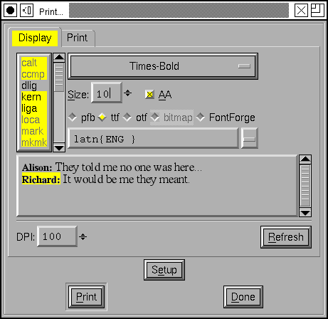
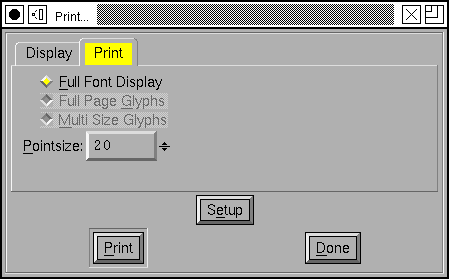
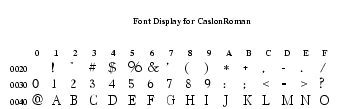
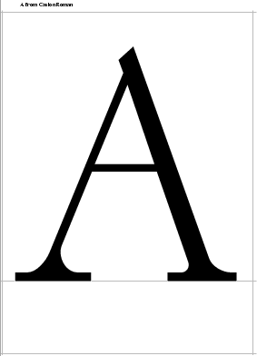
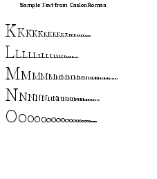
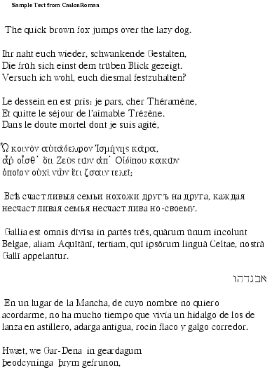
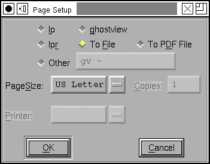

Display & Print Fonts¶
This dialog allows you to display text in any fonts you have loaded into FontForge and see how they look on the screen and together. Having done that to your satisfaction you may optionally print the result.
The textarea should behave like any of FontForge’s textarea’s (except this one is a lot slower to respond than others), it also allows you to select any piece of text in it and change the font, point size and what OpenType features should be applied to that text.
First make a selection (or type ^A to select everything), then choose which font you want and how you want it dsplayed.
You may also select how the font is rasterized. The first three choices (pfb, ttf, otf) will be rasterized by freetype, and the display is very similar to that used by X (so this is an easy way of checking how your fonts will look on the screen without going to the bother of installing them.). The various options specify in what format the font is passed to freetype:
pfb – PostScript Type 1 font
ttf – Truetype font
otf – OpenType (PostScript Type 2) font
The “bitmap” option allows you to pick from any of the generated bitmap (or greymap) fonts that have already been generated and reside in the database.
The “fontforge” option will invoke FontForge’s own rasterizer. FontForge’s rasterizer generates appallingly bad bitmaps.
You can choose whether you want the font to be antialiased or not.
And different bits of text can have different settings, so you can compare them and decide which is least worse. Also you can compare two different fonts and see how well they work together.
As with the metrics view you may set the script and language of the selected text and then choose which features to apply. Note that if you start typing text in a different script you will probably have to change it manually – FontForge expects you to set the script explicitly. On the upper left is a list of OpenType features (and Apple feature/settings) which will be applied to the selected text.
Unlike the metrics view, fontforge will attempt to do baseline alignment if the font being displayed has horizontal baseline information.
FontForge tries to guess the appropriate dots per inch for your display – it may not get it right (X doesn’t always know it either). If it doesn’t and the text looks too big or too small you may adjust it manually.
This display is not modal, so you can edit your font while it is up. However
FontForge does not update the display everytime you make a change, if you wish
your changes to be reflected in the display you must press the [Refresh]
button. (If you make a severe change, like removing a glyph from the font,
please, please, please press this button or FontForge may crash if you try to
display something which is no longer there).
There is a popup menu on the right mouse button.
You may Import text from a file. The file must either be in the current local encoding, or UCS4 (unicode) or UTF8 (unicode). If it is in unicode the first character in the file must be U+FEFF. You can also save the contents of the field into a file (it will be in UTF8 and preceded by U+FEFF) by typing ^S.
You can also generate an image of this window by typing Ctl-Shft-S.
Once you have edited in this window to your satisfaction you may print the result. FontForge will produce either PostScript or PDF output (If your fonts are originally truetype they will be output with a PostScript wrapper around them so PostScript can deal with them).
There are other printing options too. At the top of the dialog are a set of tabs “Display” and “Print”. The “Print” pane allows you to print certain standard displays of a single font.
All the characters of your font, in a rectangular grid:
Certain selected characters, one per page, at a scale to fill up the page
Certain selected characters at various pointsizes (72, 48, 36, 24, 20, 18, 16, 15, 14, 13, 12, 11, 10, 9, 8, 7.5, 7, 6.5, 6, 5.5, 5, 4.5, 4)
Or the edited display from the other pane.

The print pane appears again at right. The three choices are reflected by the radio buttons (the Full Page Character and Multi Size Character buttons will print any selected characters in the font view, the current character in the outline view, and any characters displayed in the metrics view – they will be greyed out if no characters are selected in the font view).
The PointSize field applies to the Full Font Display.
The Setup button allows you to pick a printer, pagesize, etc.
You may choose to queue the result with lp or lpr, you may also direct it to ghostview, or simply print to a file. Files may be written in either postscript or pdf formats (if you send output to a file you will be prompted for a filename after you click OK in the Print (not the PageSetup) dialog). You can also direct the print run to any command you choose (the “Other” option). This command must expect to find a postscript file on its standard input, if the command needs any arguments (a common example might be the “-” used by many commands to make them read standard input) they should be placed in the text field with the command name.
FontForge knows about certain standard sizes of paper. If you want to use a size which isn’t on the list then enter it as 8.5x11in or 21x29.7cm.
FontForge will read your printcap file to get a list of printers. It also adds one magic entry “<default>” if you select this (or if you leave the printer blank) then lp or lpr will chose their default printer.
The Printer and Copies arguments are not meaningful when using ghostview or printing to a file.
Obviously my samples are based on european and CJK character sets. If anyone has a small section of text in any language not represented please send me a copy. Copyright free, of course, and preferably in a unicode encoding…